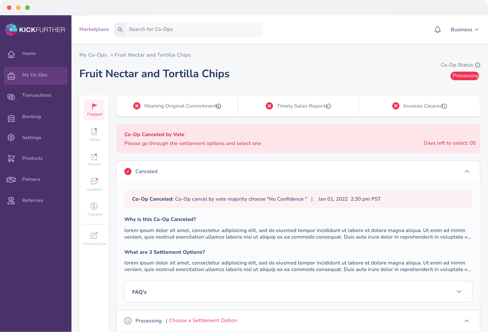
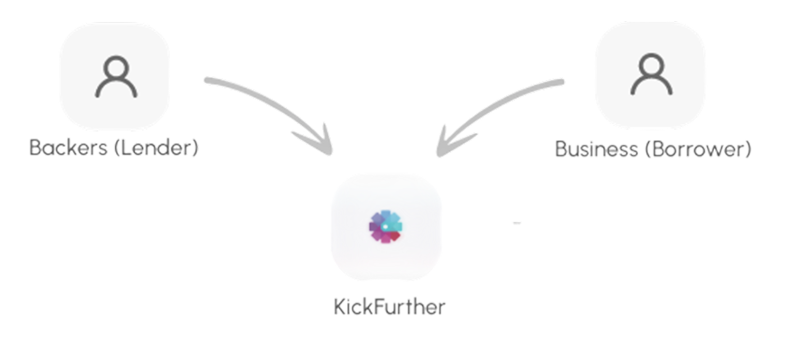
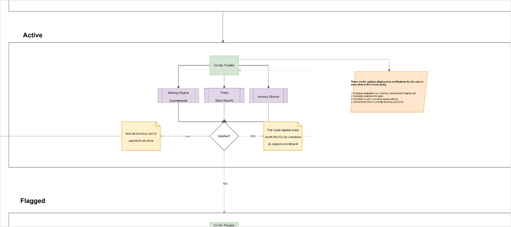
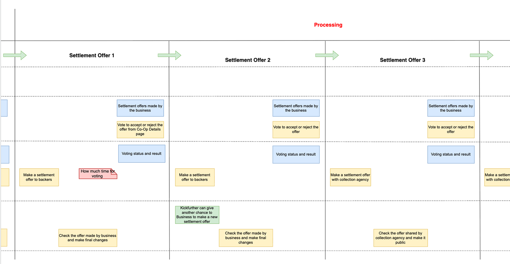
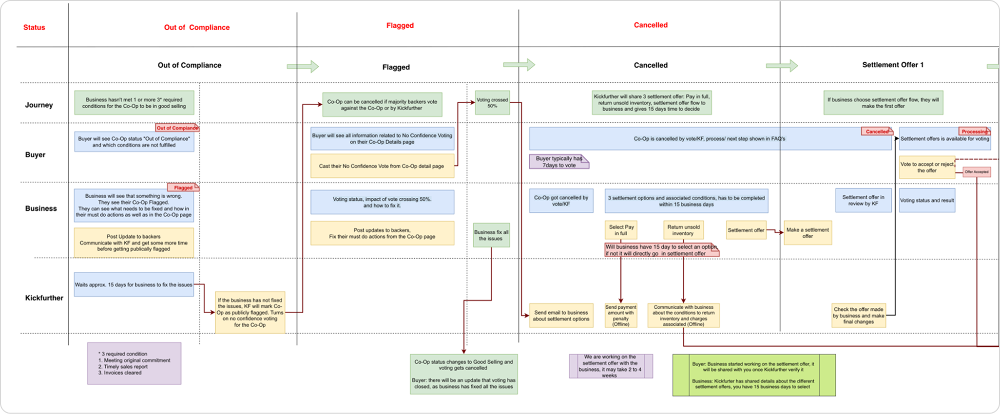
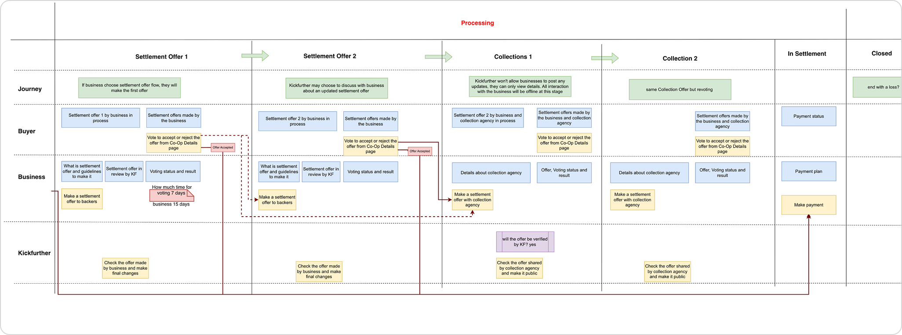
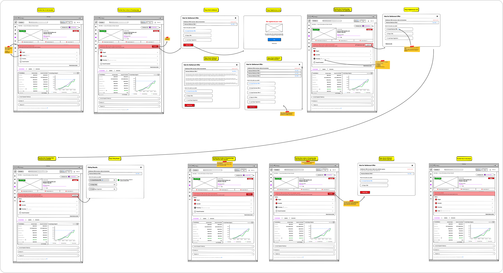
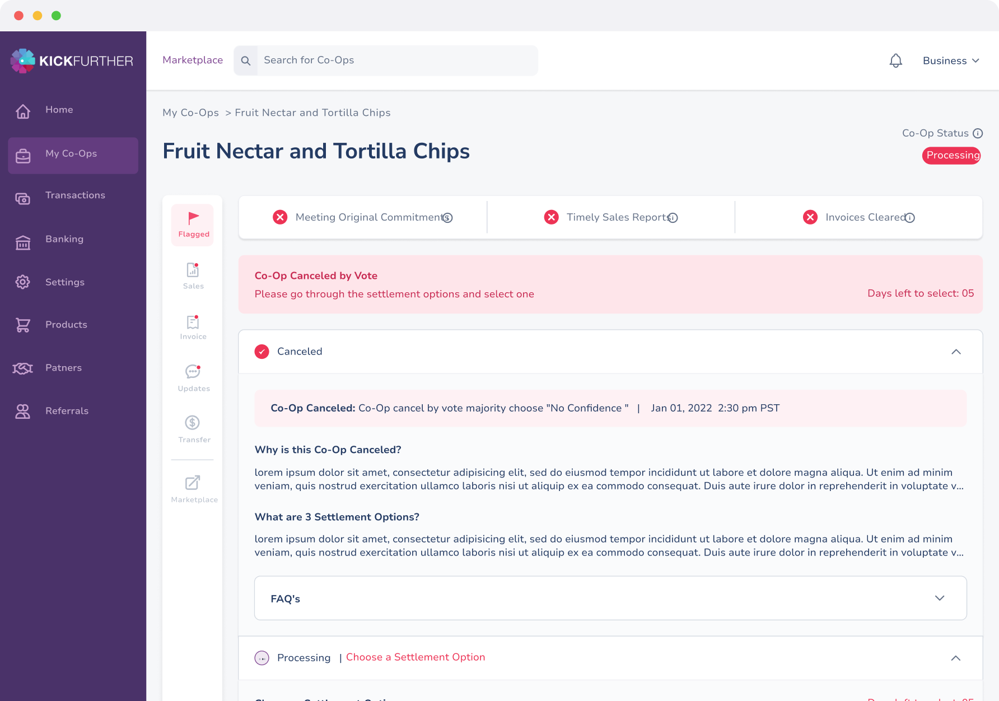
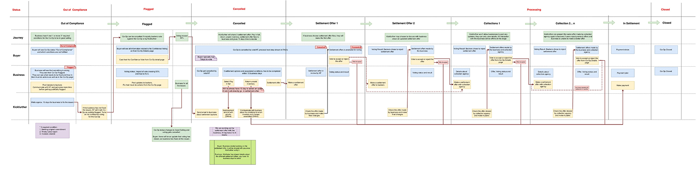

B2B Lending app • UX & UI Design • Service Design
How do you build trust in a process no one can see?
Redesigning what happens when a funding deal goes wrong, so no one is left in the dark.

Introduction
Kickfurther: a marketplace that runs on trust.
Picture a small business that’s just landed the biggest order of its life. To fulfil it, they need to produce a lot of stock, and fast, which means they need cash now. A bank could lend it, but a bank takes its time: days of paperwork, approvals, and back-and-forth before any money actually moves. When there’s an order to deliver and a deadline closing in, that kind of wait can cost you the whole deal.

Kickfurther offers another way. Instead of one big lender, the money comes from a crowd of individual investors: ordinary people, not banks, who each put in a share and together cover the cost of producing the inventory. The business gets its money quickly, makes the products, and as those products sell, everyone who chipped in gets their money back, plus a little extra. No slow loan, no giving away a piece of the company. When it works, everyone wins. But the whole thing balances on one fragile thing: trust. All those people are handing money to a business they’ve never met, on a promise that the products will sell and the money will come back. As long as sales keep coming in and the business keeps everyone updated, that trust holds.
Behind the scene
The promises behind the money.
Getting funded is the start, not the finish line. Once the money’s in and the products are being made, the business has to hold up its end of the bargain: a few clear commitments that keep the people who backed it protected. Three of them decide whether a deal stays in “good standing”:
-
Meeting the original commitment
Sticking to the plan agreed when the deal was funded: the repayment schedule and the terms it was built on.
-
Timely Sales Reports
Reporting how much stock has actually sold, on a set schedule, so everyone can see whether the deal is on pace.
-
Cleared invoices
Paying what’s due on time as the products sell, so the people who funded the deal are repaid on schedule.
On top of these, the business is expected to keep its backers in the loop by posting regular updates on how things are going. As long as all of this holds, everyone can see the deal is healthy, and trust takes care of itself. Miss these, though, and the picture changes fast.
The Problem
- Mandatory Sales Report Pending. In order to be in compliance, Submit Sales Report Now
- Total Due Amount is $2,000. To get in compliance and avoid penalties, Make Payment Now
- Last update posted on 28 Jul 2021, Post an Update Now
The Black Box.
Most deals go fine. But every so often, a business gets buried in the work of actually selling and goes quiet. It stops posting updates. It misses a scheduled sales report. A payment slip. On paper, that trips a status called “out of compliance.” In plain terms: the business has fallen behind on what it promised, and the people who funded it are suddenly owed answers. If the business can pull things back on track, the deal will recover. If it can’t, Kickfurther has to step in and carefully unwind the deal: chasing settlements, working out what can be recovered, and returning whatever money it can to the people who invested.
Here’s the problem. That entire recovery process happened almost entirely outside the app, in emails, phone calls, and spreadsheets passed between teams. There was no single place to see what was happening, or what came next.
So everyone was in the dark, at the exact moment they most needed light:
- The people who’d invested couldn’t see why a deal had been flagged, what was being done about it, or what would happen to their money.
- The business didn’t understand what it had done wrong, what was expected now, or how to get back in good standing.
- Kickfurther’s own team couldn’t explain the process clearly either, because it had never been written down in one place. Different people told slightly different versions of it.
The result was predictable. Support got buried under calls and emails from every side, all asking a version of the same question: what happens next? And every unanswered version of that question chipped away at the one thing the whole marketplace was built on: trust.
The Iterations
Mapping the invisible.
Start with the happy path

I didn’t start with screens. You can’t fix a process until you can see all of it in one place, and back then, no one could. So the first thing I did was draw it. I began with the deal’s normal life: how a funding deal moves from start to finish when everything goes right. For the happy path, it came together cleanly. But the moment a deal went bad, the map went vague. The steps thinned out, the detail fell away, and it was clear no one had ever really charted what happened after things went wrong. That blank space on the map was the problem. The failure path was the part nobody owned.
Go deeper into the cancellation flow
So I went straight at that part: what actually happens when a deal falls out of good standing. I sat with the teams who touched it (product, operations, legal, and customer service) and asked each of them to walk me through it. What I got back were different walkthroughs. Every team described the process a little differently, and no two versions quite lined up. That mismatch wasn’t noise. It was the finding. If the people running the process couldn’t tell the same story about it, of course the investors and businesses on the outside were lost. The black box wasn’t just invisible to users; it was fuzzy even inside the company. That was the real thing to solve.
Build a first version from my own understanding



Rather than wait until I understood everything, I drew a first version myself: a rough “stage zero,” built from what I’d pieced together so far, gaps and all. It’s better to put a rough draft in front of people than to wait for a perfect version that never gets finished. I laid it out as a service blueprint: three lanes for the three sides of every deal, the buyer (the investor), the business, and Kickfurther, with a top journey row naming each stage in plain English so any reader knows where they are. And within each lane I tracked two things at every step: the information that side could see, and the actions they could take. That information-and-action split is what made the gaps jump out. You could stop at any stage and see it instantly: “the buyer has no information here.” “Only Kickfurther can act, and nobody told anyone.” The blueprint didn’t just show the process. It showed exactly where each side went blind or got stuck.
Take it back to the teams
The stage-zero blueprint was a draft to argue with, not the answer. So I took it back out. First to product and customer service. They verified the day-to-day flow and filled the gaps in what I’d drawn. Then to legal and compliance, who were the hardest to get time with, so I reached them last, and they held the most important piece. The later stages weren’t arbitrary labels. Settlement Offer 1 and 2, then Collections 1, 2… n, each carried a precise meaning rooted in the actual laws Kickfurther operated under: a first settlement offer the business puts to a backer vote, a revised second offer if that’s rejected, then a collection agency stepping in, its offer re-presented round after round until a settlement is finally reached. Legal and compliance didn’t just fill gaps; they explained why the process had the shape it did. That was the input that turned the map from plausible into correct. Pass by pass, the blueprint got closer to reality on all three sides, until it stopped being my interpretation and became the single shared source of truth the whole team could point at. It’s the artefact the UX Design Award submission credits with “refining workflows and driving consensus” across departments.
Delivery
Making it visible
The blueprint gave everyone one version of the truth. The design job was to turn that single process into three views, because each side needed to see the same thing differently. Two rules guided all of it: always show people where things stand, and never leave them at a dead end without a next step.
For the investor: a window into their money

I built a deal-detail view that shows exactly where things stand. Three status indicators sit at the top (Meeting Original Commitments, Timely Sales Reports, and Invoices Cleared), giving an at-a-glance read on the deal’s health. When a deal is flagged, the screen says why in plain language, listing the exact conditions that tripped it. The No-Confidence vote is shown live, with a bar tracking how much weighted ownership has voted, and the investor can cast their vote right there. A visual lifecycle shows how far along the recovery is, and a financial summary (claims and projected payouts) keeps the money concrete, never abstract. Why: the investor’s whole problem was not knowing. Every element answers a question they used to have to email support to ask.
For the business: the same status, made actionable

The business sees the same three indicators, but paired with alert banners that each carry one clear action: submit the pending sales report, clear the overdue payment, post an update. Below them, a plain-language explanation of why you’re flagged, what it means, and the exact steps back to good standing. Why: the business didn’t need sympathy, it needed to know what to fix, and that answer now lives in the dashboard instead of a support call.
For the team: the workflow they never had

The blueprint itself became the documented workflow, and its logic surfaced in the product: compliance status on the dashboard with action-required items pushed to the top, and overdue tasks marked with a red beacon in the navigation so nothing slipped. Why: the team’s problem was that the process lived in people’s heads and inboxes. Now it lived in one place, the same place everyone else could see.
How the screens got there
None of these views arrived in one pass. The layouts moved through several rounds of wireframes, refined with the team and tightened through testing, until each screen showed the right thing first and every action read clearly.
Impact
Impact, and what it taught me
A process that once lived in inboxes, phone calls, and spreadsheets now lived in the product: visible, in plain language, to all three sides at once. That single shift, from hidden to shared, is what the numbers reflect.
Beyond the numbers: support load dropped, because people could self-serve through a transparent, in-app process instead of emailing to ask “what happens next?” And credibility rose: for the first time the team had a documented workflow, so businesses and investors finally got the same consistent answer.
What I took from it
Map the system before you design the screens. The blueprint was the real deliverable here. The screens worked because they sat on a shared, structural understanding of the process, not on guesses about what each side needed.
A two-sided marketplace is really three-sided. The platform’s own team is the invisible third party. The flow only came together once all three (investor, business, and team) were designed as different views of one shared truth.
The most important answers came from the team hardest to reach. Legal and compliance held the “why” behind the whole process. Chasing that down is what turned a plausible map into a correct one, so I learned to go find the people who own the rules, not just the people who run the day-to-day.
The question I started with was how you build trust in a process no one can see. In the end, the answer was simple: you make it visible.